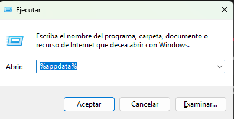

Conjuntos Mod
Hola, aquí encontrarán como hacer sus conjuntos mod con el Yim Menu.
Además van a poder agregar conjuntos mod de otras personas.
Pasos de como crear sus conjuntos:
- Primero comenzamos abriendo el yim menu y vamos a este apartado; ahí podremos personalizar a nuestro gusto el conjunto.
- Después, para guardar el outfit en nuestro perfil, podemos ir a una propiedad que contenga un armario o desde el mismo Yim Menu; ahí le daremos guardar outfit o conjunto. Así ya lo podremos usar en el online con más personas sin tener que volver a colocarlo en el Yim menu.


Como guardar un conjunto para compartirlo:
- Si ya creamos nuestro conjunto, solo iremos a guardar/cargar outfit, le pondremos un nombre y le daremos guardar. Esto quedará en la carpeta de los outfits en el Yim Menu, la cual podremos compartir para que otra persona pueda usarlo.

Como colocar un conjunto mod de otra persona:
- Le damos la tecla windows + r, y escribimos %appdata% 
- Vamos a la carpeta YimMenu
- Vamos a la carpeta "saved_outfits" (para que 100% aparezca esa carpeta debemos haber guardado minimo un solo conjunto).
- En esa carpeta pondremos el outfit que deseemos para nuestro personajes.
- Para usarlo, iremos al Yim Menu y le daremos clic al outfit guardado; después podremos guardarlo en un armario para salvarlo sin tener que volver a colocarlo con el Yim Menu.

Les dejo un pack de conjuntos que no son de mi propiedad, pero que podrán usar en sus personajes.